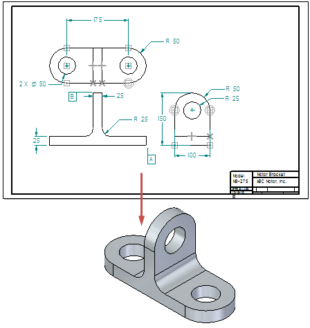

Using 2D drawing views to create model sketches
You can use the Create 3D command to create a 3D model with Product Manufacturing Information (PMI) in a part, sheet metal, or assembly document, from the source 2D drawing geometry and manufacturing dimensions in a draft document. You also can use the Create 3D command to update an existing model with sketches and manufacturing dimensions.

For more information, see Creating model sketches from 2D drawing views.
Note:
In web help, you can practice with the Solid Edge tutorial, Modeling Parts from Drawing Views, which you can launch from the Tutorial collection.